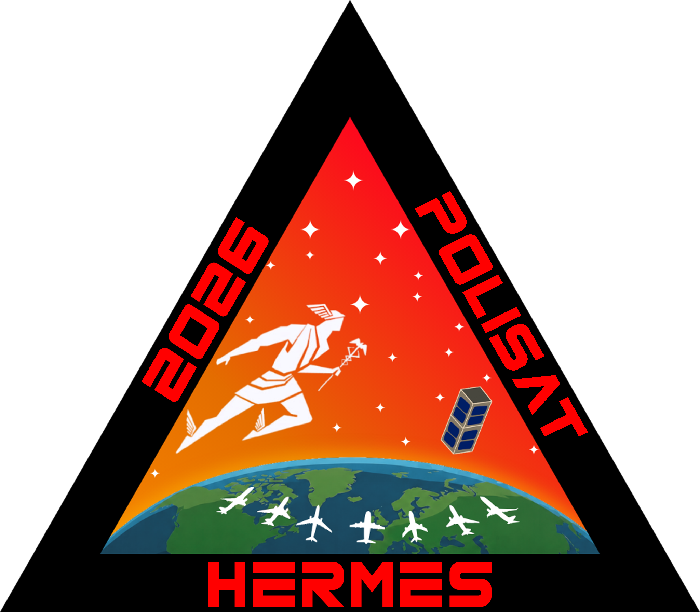

CubeDesign 2026Escola Politécnica · USP
Mission
HERMES
How it works
Four steps, from a plane in the sky to a table of flights on our ground station screen.

01
Receive
A custom patch antenna and an RTL-SDR pick up ADS-B at 1090 MHz
02
Check
Each message is CRC-checked, and corrupted ones are dropped
03
Decode
A Raspberry Pi Zero W extracts identity, position, altitude and speed
04
Send
The data goes down to our ground station over LoRa at 433 MHz